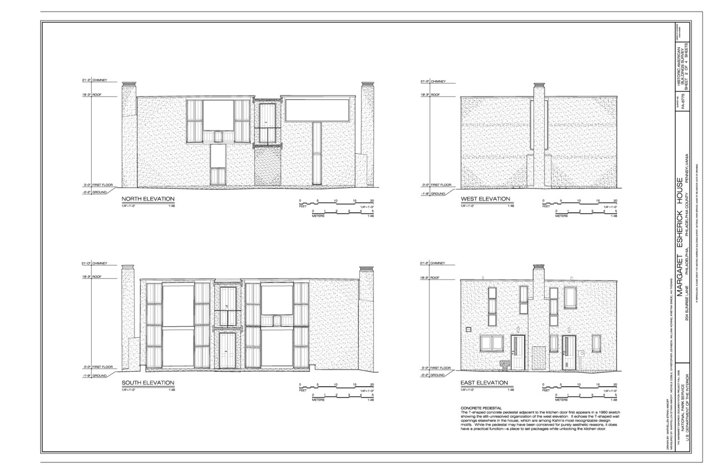
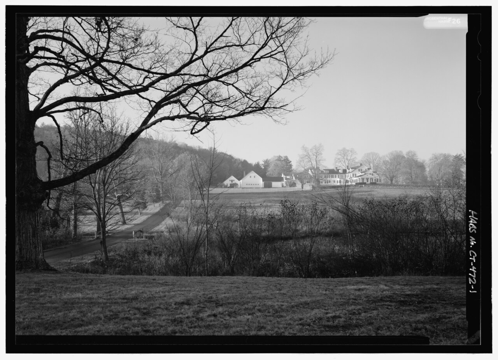
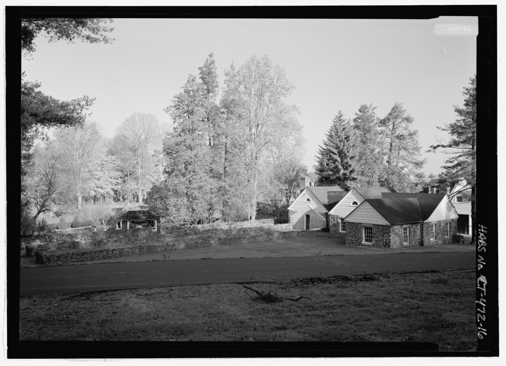
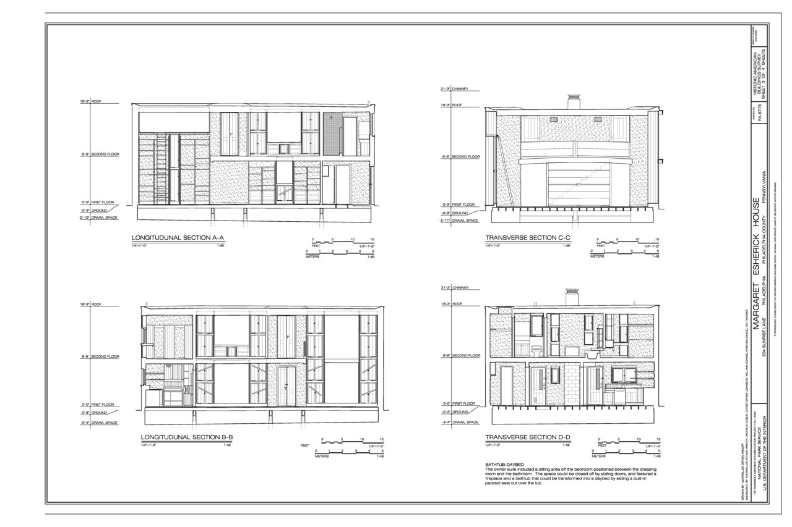
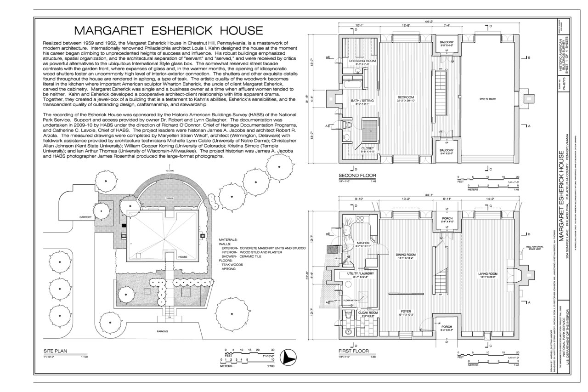
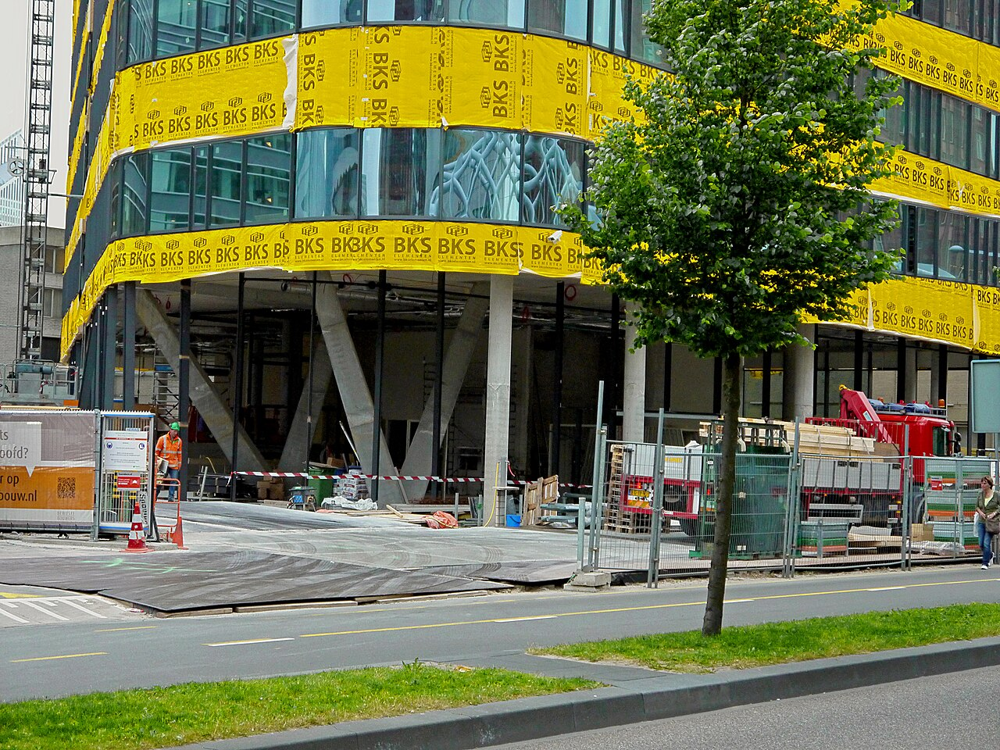
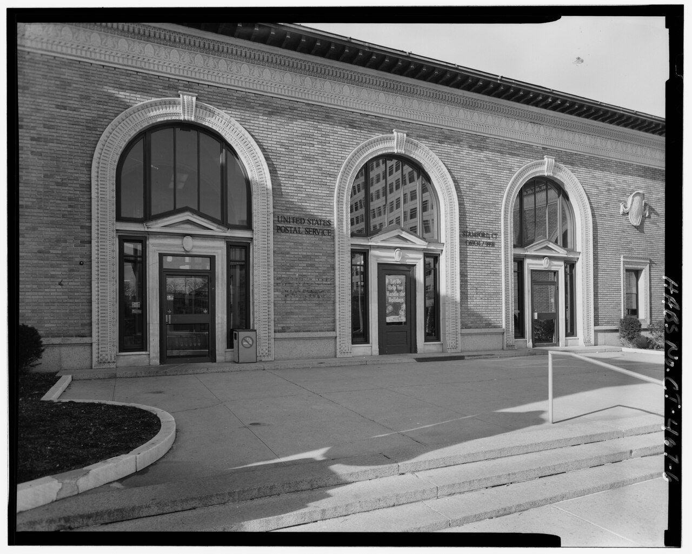
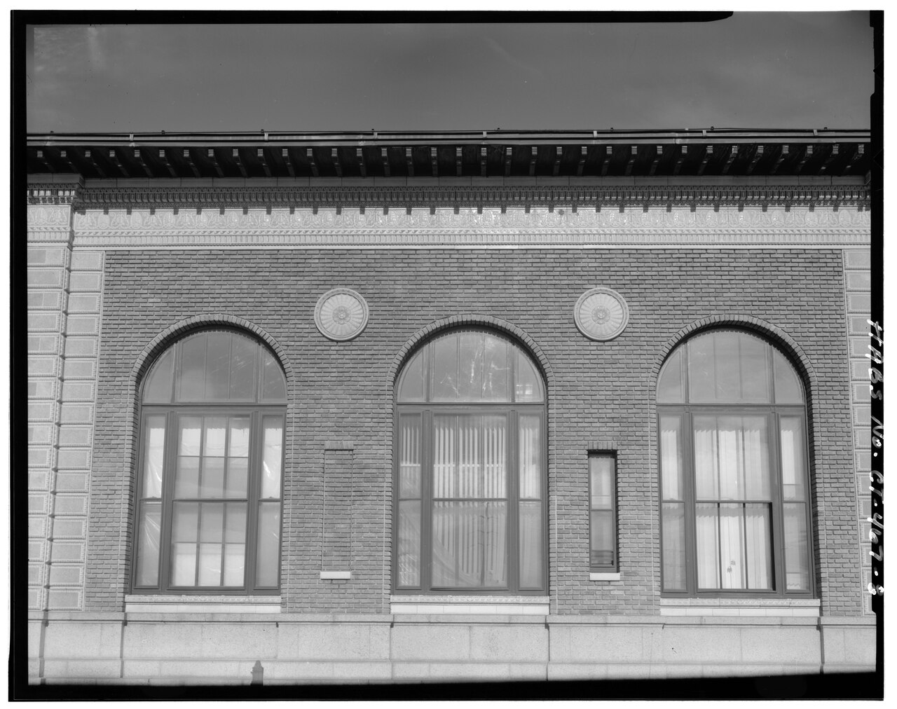
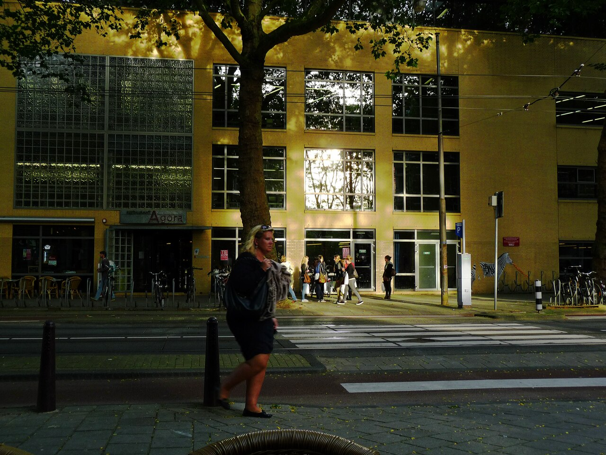
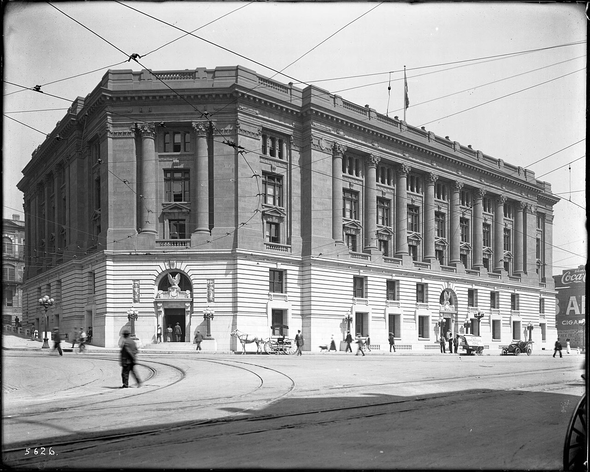

#301 · horizontal · horizontal · 7200x4800 · Public domain File:Details - Margaret Esherick House, 204 Sunrise Lane, Philadelphia, Philadelphia County, PA HABS PA-6775 (sheet 4 of 4).tif Wikoff, MaryEllen Strain · 1280x853 https://commons.wikimedia.org/wiki/File:Details_-_Margaret_Esherick_House,_204_Sunrise_Lane,_Philadelphia,_Philadelphia_County,_PA_HABS_PA-6775_(sheet_4_of_4).tif

#302 · horizontal · horizontal · 7200x4800 · Public domain File:Elevations - Margaret Esherick House, 204 Sunrise Lane, Philadelphia, Philadelphia County, PA HABS PA-6775 (sheet 2 of 4).tif Wikoff, MaryEllen Strain · 1280x853 https://commons.wikimedia.org/wiki/File:Elevations_-_Margaret_Esherick_House,_204_Sunrise_Lane,_Philadelphia,_Philadelphia_County,_PA_HABS_PA-6775_(sheet_2_of_4).tif

#303 · horizontal · horizontal · 5263x3813 · Public domain File:General view of Pope-Riddle house complex and landscape from east-northeast. Note pond in foreground. - Hill-Stead, 35 Mountain Road, Farmington, Hartford County, CT HABS CT-472-1.tif Rosenthal, James W.
Related names:
Riddle, Theodate Pope
McKim, Mead, and White
Pope, Alfred Atmore
Pope, Ada Brooks
Manning, Warren
Farrand, Beatrix Jones
Sienkewicz, Julia A., historian
Sienkewicz, Julia A. · 1280x927 https://commons.wikimedia.org/wiki/File:General_view_of_Pope-Riddle_house_complex_and_landscape_from_east-northeast._Note_pond_in_foreground._-_Hill-Stead,_35_Mountain_Road,_Farmington,_Hartford_County,_CT_HABS_CT-472-1.tif

#304 · horizontal · horizontal · 5291x3827 · Public domain File:General view of Pope-Riddle house complex from southeast. - Hill-Stead, 35 Mountain Road, Farmington, Hartford County, CT HABS CT-472-16.tif Rosenthal, James W.
Related names:
Riddle, Theodate Pope
McKim, Mead, and White
Pope, Alfred Atmore
Pope, Ada Brooks
Manning, Warren
Farrand, Beatrix Jones
Sienkewicz, Julia A., historian
Sienkewicz, Julia A. · 1280x926 https://commons.wikimedia.org/wiki/File:General_view_of_Pope-Riddle_house_complex_from_southeast._-_Hill-Stead,_35_Mountain_Road,_Farmington,_Hartford_County,_CT_HABS_CT-472-16.tif

#305 · horizontal · horizontal · 7200x4800 · Public domain File:Sections - Margaret Esherick House, 204 Sunrise Lane, Philadelphia, Philadelphia County, PA HABS PA-6775 (sheet 3 of 4).tif Wikoff, MaryEllen Strain, creator · 1280x853 https://commons.wikimedia.org/wiki/File:Sections_-_Margaret_Esherick_House,_204_Sunrise_Lane,_Philadelphia,_Philadelphia_County,_PA_HABS_PA-6775_(sheet_3_of_4).tif

#306 · horizontal · horizontal · 7200x4800 · Public domain File:Title sheet and floor plans - Margaret Esherick House, 204 Sunrise Lane, Philadelphia, Philadelphia County, PA HABS PA-6775 (sheet 1 of 4).tif Wikoff, MaryEllen Strain, creator · 1280x853 https://commons.wikimedia.org/wiki/File:Title_sheet_and_floor_plans_-_Margaret_Esherick_House,_204_Sunrise_Lane,_Philadelphia,_Philadelphia_County,_PA_HABS_PA-6775_(sheet_1_of_4).tif

#307 · horizontal · horizontal · 4000x3000 · CC0 File:Construction of a new office-building near Beatrixkwartier in The Hague city; high resolution image by FotoDutch, June 2013.jpg Fons Heijnsbroek · 1280x960 https://commons.wikimedia.org/wiki/File:Construction_of_a_new_office-building_near_Beatrixkwartier_in_The_Hague_city;_high_resolution_image_by_FotoDutch,_June_2013.jpg

#308 · horizontal · horizontal · 5000x4004 · Public domain File:Detail of main entrance doorways on east facade - Stamford Post Office, 421 Atlantic Street, Stamford, Fairfield County, CT HABS CONN,1-STAMF,13-6.tif Related names:
Wenderoth, Oscar; Charles McCaul Company; Tiffany and Company; Yale and Towne; Carlyle Furniture Company; McKee Company; Stamford Iron Works; Burnham Corporation; Campbell, John A; Trenton Potteries Company; Historical Perspectives, Incorporated, contractor; Vergara, M, transmitter; Stewart, Robert C, photographer; Bedford, Steven, historian; Saunders, Cece, historian · 1280x1025 https://commons.wikimedia.org/wiki/File:Detail_of_main_entrance_doorways_on_east_facade_-_Stamford_Post_Office,_421_Atlantic_Street,_Stamford,_Fairfield_County,_CT_HABS_CONN,1-STAMF,13-6.tif

#309 · horizontal · horizontal · 5000x3952 · Public domain File:Detail of south facade, original building (1915) looking north. Note cartouches between windows - Stamford Post Office, 421 Atlantic Street, Stamford, Fairfield County, CT HABS CONN,1-STAMF,13-8.tif Related names:
Wenderoth, Oscar; Charles McCaul Company; Tiffany and Company; Yale and Towne; Carlyle Furniture Company; McKee Company; Stamford Iron Works; Burnham Corporation; Campbell, John A; Trenton Potteries Company; Historical Perspectives, Incorporated, contractor; Vergara, M, transmitter; Stewart, Robert C, photographer; Bedford, Steven, historian; Saunders, Cece, historian · 1280x1012 https://commons.wikimedia.org/wiki/File:Detail_of_south_facade,_original_building_(1915)_looking_north._Note_cartouches_between_windows_-_Stamford_Post_Office,_421_Atlantic_Street,_Stamford,_Fairfield_County,_CT_HABS_CONN,1-STAMF,13-8.tif

#310 · horizontal · horizontal · 3456x2592 · CC0 File:Evening sun is shining at the brick facades of office building on the university campus Roeterseiland in the Roeterstraat, free photos of modern glass architecture in Amsterdam city; free photo by Fons Heijnsbroek, late Summer 2012.tif Fons Heijnsbroek · 1280x960 https://commons.wikimedia.org/wiki/File:Evening_sun_is_shining_at_the_brick_facades_of_office_building_on_the_university_campus_Roeterseiland_in_the_Roeterstraat,_free_photos_of_modern_glass_architecture_in_Amsterdam_city;_free_photo_by_Fons_Heijnsbroek,_late_Summer_2012.tif

#311 · horizontal · horizontal · 5085x4071 · Public domain File:Exterior view of the old Federal Building and Post Office, Temple Street and Main Street, 1908 (CHS-5626).jpg Unknown authorUnknown author · 1280x1025 https://commons.wikimedia.org/wiki/File:Exterior_view_of_the_old_Federal_Building_and_Post_Office,_Temple_Street_and_Main_Street,_1908_(CHS-5626).jpg
#313 · horizontal · horizontal · 1600x1200 · Public domain File:Vodafone Building Near Victoria Park.jpg Ingolfson · 1280x960 https://commons.wikimedia.org/wiki/File:Vodafone_Building_Near_Victoria_Park.jpg
#315 · vertical · vertical · 4132x5100 · Public domain File:An unidentified street with apartment buildings on each side.jpg Unknown authorUnknown author · 1280x1580 https://commons.wikimedia.org/wiki/File:An_unidentified_street_with_apartment_buildings_on_each_side.jpg